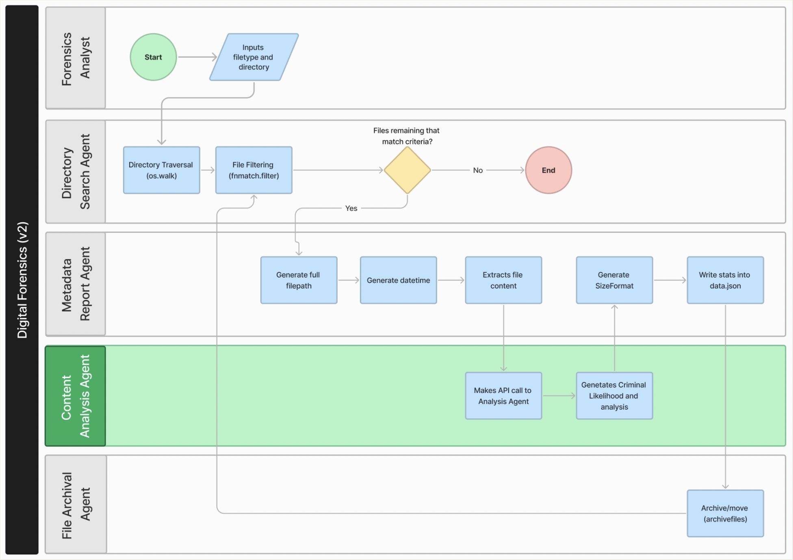

Individual Project
This Project expands the scope developed in the Group Project.
View Project presentation, where main improvements are discussed.
The main improvements are:
- Added a new AI Agent to the workflow: Content Analysis: 
- Code for the Content Analysis Agent can be found here.
- Improved the JSON output of the workflow in this Python file.
- Added Unit Test Coverage for the workflow in this Folder.
- Added Integration Tests for the Open AI integration here